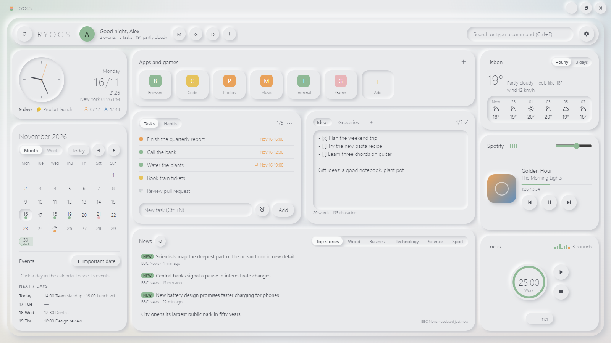
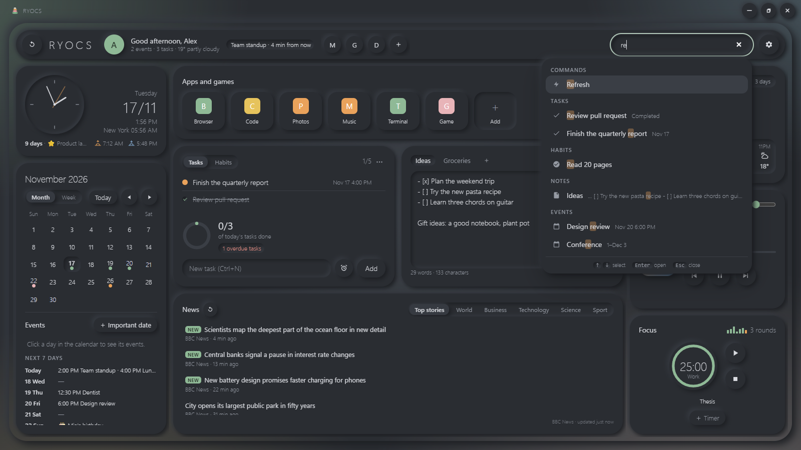
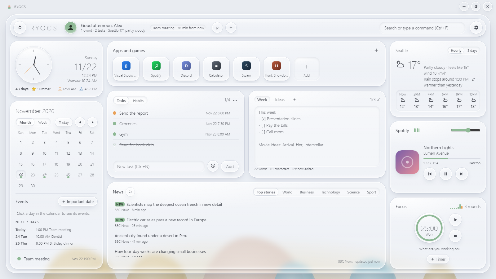

Your day, on one calm screen
RYOCS is a personal dashboard for Windows. Calendar, tasks, notes, weather, news, music and a focus timer, side by side, always one click away in the tray.
Free and open source (MIT) · Windows 10 and 11 · English and Turkish

Everything you check during the day
Each card can be moved, resized, hidden or tuned to taste. Turn on only what you need.
Google Calendar
Month and week views, upcoming events, birthdays, important dates and your regional holidays.
Tasks and habits
Reminders, repeats on any days you like, priorities, overdue tracking and habit streaks.
Notes
Quick notes with checklists, several notes in tabs, word count and full search.
Weather
Hourly and 7-day forecasts from Open-Meteo, plus a morning alert when rain or frost is on the way.
News
BBC News by category in English, Turkish sources in Turkish. Filter out keywords and sources.
Spotify
See what is playing, skip, pause, change the volume and peek at what is up next.
Focus timer
Pomodoro rounds with a daily goal and streak. Do not disturb holds notifications until the round ends.
Gmail
Your unread mail at a glance, read-only. Click a message to open it in the browser.
Rates, system, clipboard
Currency and gold prices, CPU, memory, disk and battery, and a private clipboard history.
Search everything
Press Ctrl+F to find apps, tasks, notes, events and commands in one place.
Make it yours
12 themes, glass look, animated backgrounds, accent colours, drag-to-resize layout and saved layouts.
Private by design
Your data stays in your user folder. Optional PIN lock, daily backups and OneDrive sync.
A closer look
Light, dark and glass, in English or Turkish. Click a picture to enlarge it.




Get started
Installs for your user only, no admin rights needed.
Download
Get RYOCS-Setup.exe from the latest release and run it. If SmartScreen warns, choose More info → Run anyway.
Pick your cards
Weather, news and rates work right away. Open Settings → Cards to switch cards on or off.
Connect accounts
For Google Calendar, Gmail or Spotify, follow the guided setup in Settings → Accounts or the step-by-step guide. It is free and your keys stay on your PC.